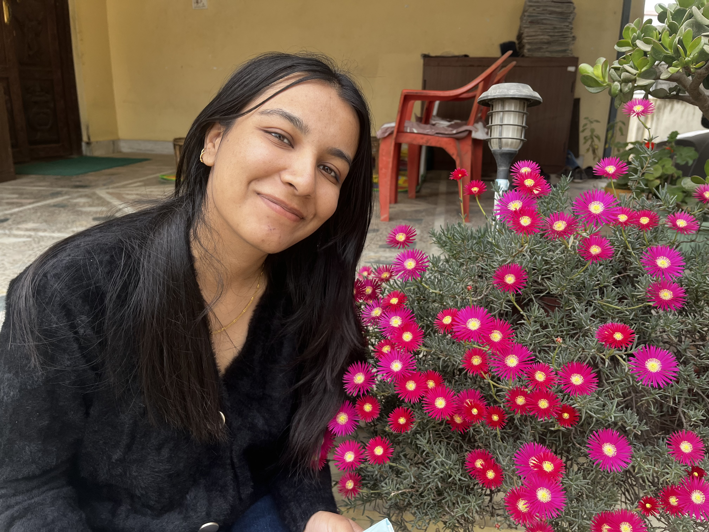

About Me
I was born in Kathmandu, Mulpani. I completed high school at Kathmandu Model College, Bagbazar, where I was the president of the Research and Presentation Club. I am a fast learner who enjoys traveling to new places but also loves sleeping and watching movies. My favorite hobby is eating food at new places.
I have basic programming knowledge in Java and Python. I am fluent in using ArcGIS and PostgreSQL for geospatial and database management tasks. Additionally, I am experienced in using surveying instruments like Theodolite, Plane Table, Total Station, and Level Machine effectively.
Projects
Interactive Portfolio Website
An interactive and beginner-friendly portfolio showcasing my skills and projects.
Mapping Application
A GIS-based application to visualize spatial data effectively.
Research in Chatbots
Conducted research on chatbot technology during high school as a part of the Research and Presentation Club initiatives.
Poetry Writing
Wrote poems during middle school and won several awards for creativity and expression.
University Projects
3D Model Preparation
Prepared detailed 3D models as part of coursework in the first year.
GIS-Based Speed Camera Location Pinpointing
Utilized GIS tools to determine optimal locations for speed cameras in the third year.
Field Visits
Participated in two one-month-long field visits during the second and third years, gaining hands-on experience in surveying and data collection.
Topographic and Cadastral Maps
Prepared detailed topographic and cadastral maps using advanced surveying techniques and GIS tools.
Remote Sensing
Applied remote sensing technology for analyzing satellite imagery to study land use and environmental patterns.
Mini Projects
Completed numerous mini-projects throughout the course to enhance practical knowledge and skills in GIS and surveying.